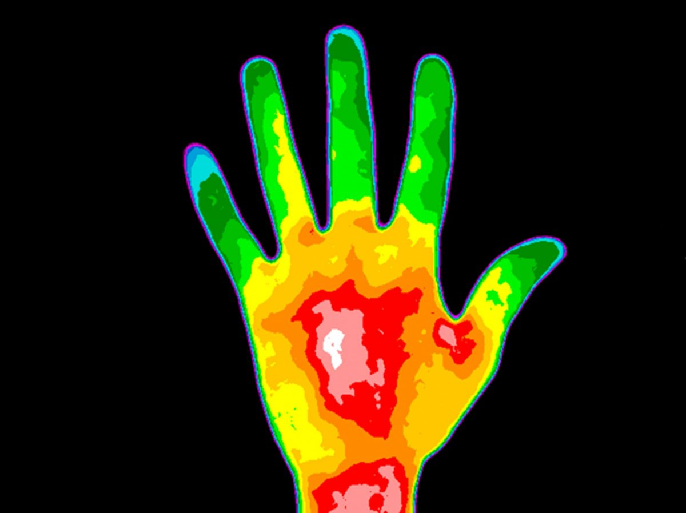
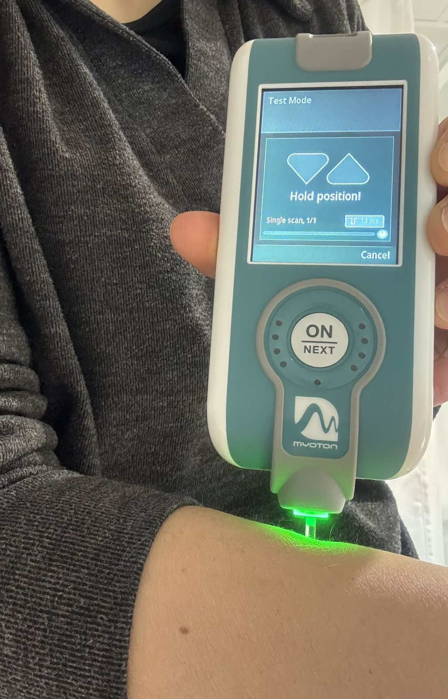
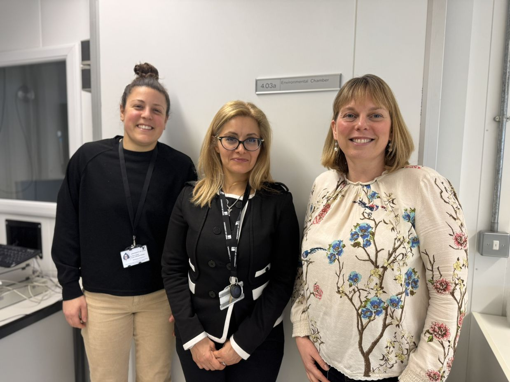
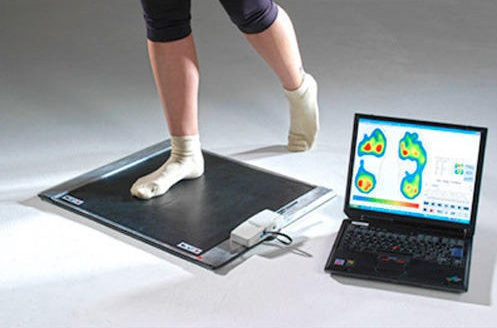

Exploring how extreme indoor temperatures affect balance, mobility, and the risk of falling in older adults.

THERMOAGE explores how exposure to cold or heat extremes indoors can affect posture, muscle properties, and the risk of falling in older adults. With climate change increasing the frequency of extreme weather events, older people—who often spend 90% of their time indoors—face heightened vulnerability.
This pilot study will generate objective data on how indoor temperatures influence balance and mobility, aiming to inform building design, public health strategies, and financial policies to better protect aging populations.
Extreme weather events are becoming more common and prolonged, posing a health risk to older adults with reduced capacity to regulate body temperature.
Falls in later life carry significant personal, clinical, and economic costs. Indoor temperature extremes can exacerbate muscle fatigue, affect balance, and ultimately increase the likelihood of falls.
Current indoor temperature guidelines (e.g. recommended 18–21°C in winter) don't fully account for older adults' specific needs or regional climate variations. This project could help shape future building standards and energy policies that actively protect vulnerable residents.

MyotonPRO device used to assess muscle stiffness and tone non-invasively
Measure changes in postural sway and muscle properties (e.g., stiffness, tone) at a range of indoor temperatures (14–30°C).
Investigate possible critical indoor temperatures where balance and muscle responses become significantly impaired, leading to a higher fall risk.
Engage Leeds City Council and other stakeholders to highlight how building design, retrofitting, and heating/cooling policies could be optimized for older adults' safety.

The THERMOAGE research team outside the Environmental Chamber at the University of Leeds
Ten adults aged over 55 (5 female, 5 male) will participate in two experimental trials in a controlled climate chamber.

Plantar pressure measurement system used to assess postural control and balance
Changes in postural sway, muscle function, and body temperature will be compared across both temperature extremes. These insights will help identify potential "tipping points" where increased fall risk may occur.
Project start, preparation of equipment and recruitment
Data collection in climate chamber
Data analysis & stakeholder feedback sessions
Project completion and final report
By connecting scientific research to local policy (Leeds City Council's core priorities), the project aims to shape proactive building guidelines and reduce hospital admissions due to falls.
Findings will inform larger studies (e.g., NERC grants) on healthy aging and indoor environments, potentially influencing national regulations and energy-efficient housing solutions.
Total Requested: £3,000
This modest budget delivers substantial returns by leveraging existing climate chamber facilities, in-kind academic expertise, and external partnerships with Leeds City Council. It also promotes EDI by enabling participation from outside the University community, covering travel expenses, and fairly compensating volunteers' time.
Early Career Researcher
School of Biomedical Sciences, University of Leeds
School of Civil Engineering, University of Leeds
School of Biomedical Sciences, University of Leeds
School of Sport, Leeds Beckett University
Head of Public Health (Older People), Leeds City Council
Head of Health and Housing, Leeds City Council
May - October 2025
10 adults aged over 55
14°C to 30°C
£3,000
Interested in our work on sustainable building solutions? Join our network to stay updated on our research findings, events, and future funding opportunities.